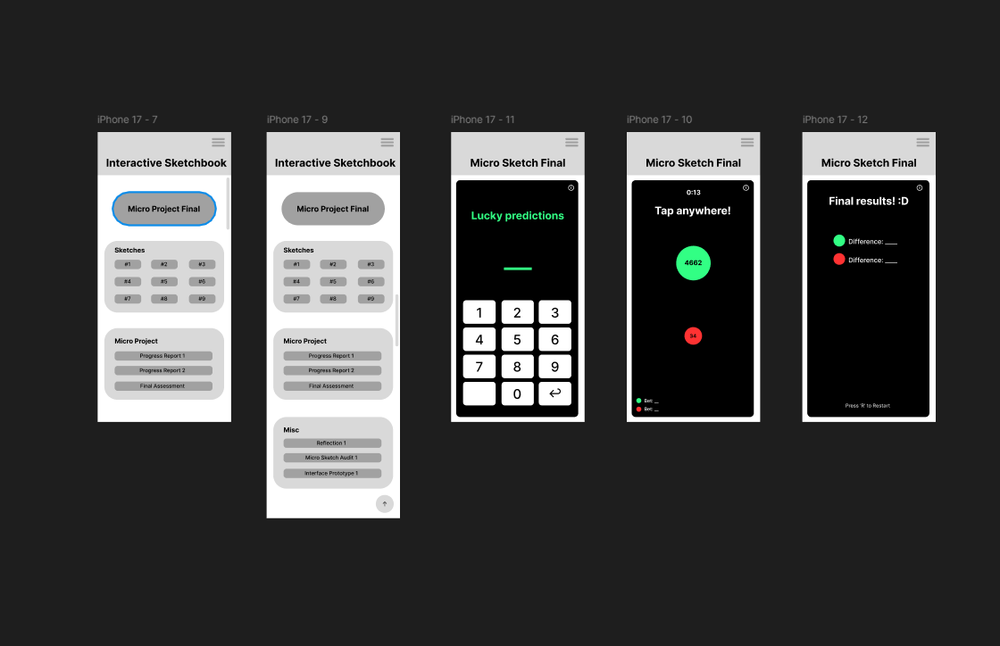

I’ve made a couple layout changes that make the overall layout a little easier to use. The new layout groups everything in its respective groups in a slightly more concise way. I also made a slightly more detailed wireframe with text and more navigation options.
I also remade the micro sketch design to prioritize mobile users and have it better flow on a smaller screen. I added more of a hierarchy on the main interactive sketchbook screen so that the micro project final button is front and center
The previous didn’t have much to it and wasn’t a functioning design for this micro sketch. I added a 3x4 number keyboard on the bottom of the betting screen to help users input their bets more often. I feel like a traditional mobile keyboard kind of obstructs the screen and gets in the way of the user's visibility. I also tried to add less text in the micro sketch pages since I feel like large blocks of text/too much text doesn’t work that well on a small mobile screen. I’m planning in the future to add an instructions button so that people can see the instructions without it being on the screen all the time. There are a couple elements that feel a little unresolved still. I haven’t decided on the overall color scheme yet for the interactive sketchbook main page. I also have not decided what unique design elements I want to add to make it feel like a fully fleshed out website/app.